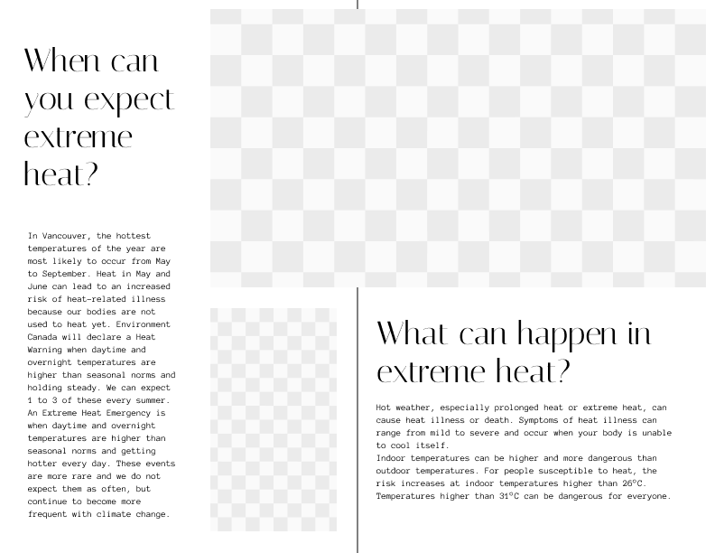
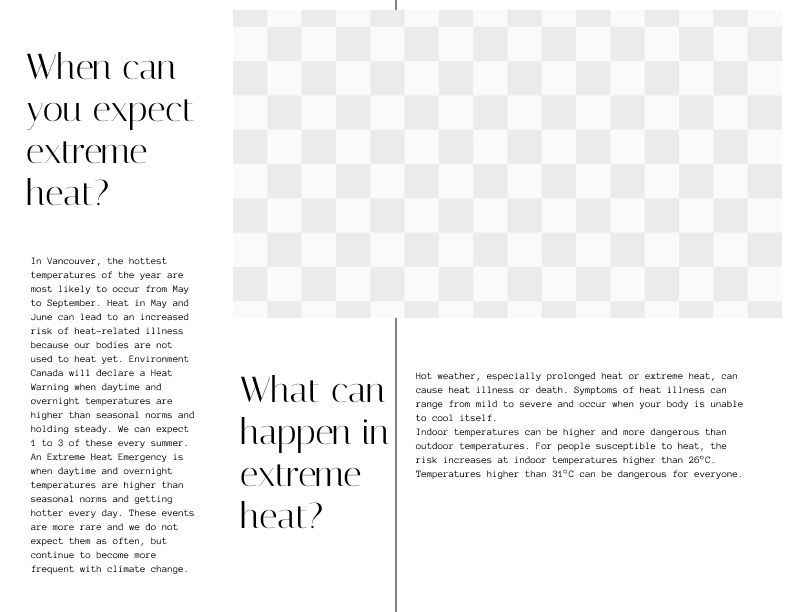

Description
Magazine designed in collaboration with City of Vancouver to inform readers about the extreme heat and how to stay safe in times of extreme heat. Utilizied a full Adobe pipeline from InDesign, Photoshop, and Illustrator. Created a print-ready files to assure compliance with printers and proper copyright standards.
Role:Designer
Duration: 1 month
Context: PUB231: Graphic Design Fundamentals, SFU
Design Rationale
To start my publication, I had to determine my overall concept and audience.
I decided that I would cater towards Gen Z, so my research for design direction was aimed attend to this demographic. As a younger audience, I set my mind on an anti-design syle to appeal to a general younger audience with bright contrasting colours and rebelious undertones.
My concept for this publication was to go against my intuition. A publication for the city of Vancouver initially reminded me of a clean and clear design so it can be appropriate for a wide range of people. I instead asked myself the question “what if I did the opposite of what was expected?” I took this opportunity to explore how I could appeal to a certain audience and niches that exist within it.
Designing
My design approach was to break conventional design principles following a strict layout and alignments. I tried to experiment with overlappings. Here are some examples:.
My first step was to typeset my pages, by alligning the linespacing, text allignments, and font sizes.


For example, in Figure 1 and 2, I played with the layout of the headings.
After typesetting, I experimented with different layouts to see what was best.
All through this process, I regularly checked in with my professor and peers for peer reviews and critique to better my design direction and stay on task with my project.
Key Takeaways
I learned how to use InDesign effectively along with all the subsquent softwares like photoshop and premiere pro to make production easy. I learned how to follow a design rationale and design according to it, and kept track of changes along the way. I used design principles effectively to aid my designs. The final product was a fun magazine ready for print!